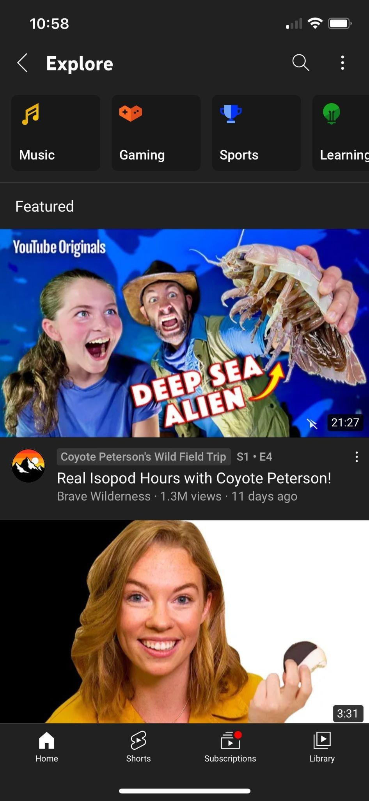
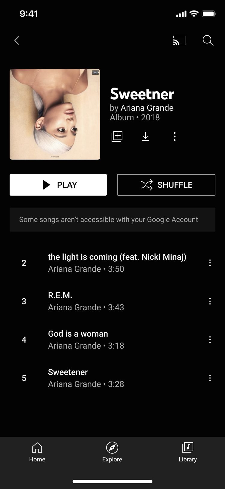
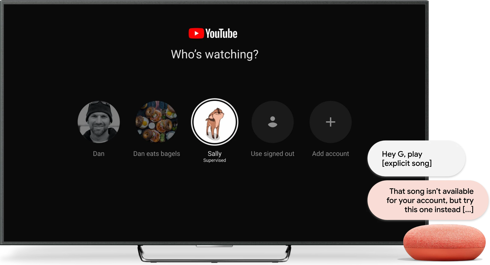
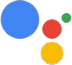
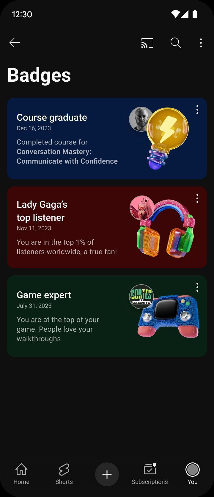
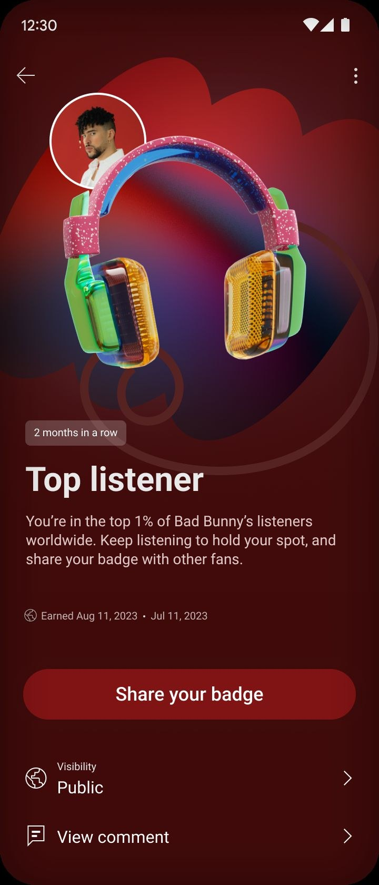
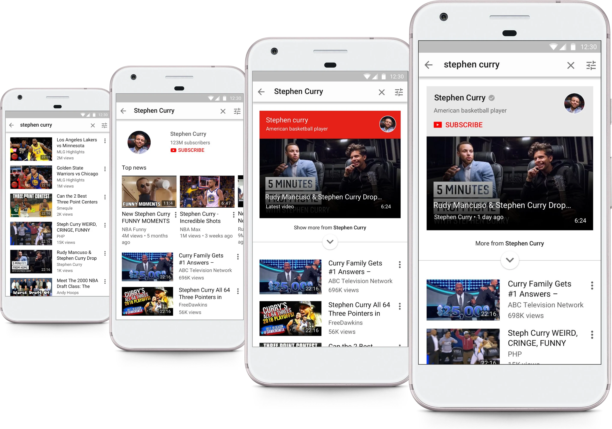
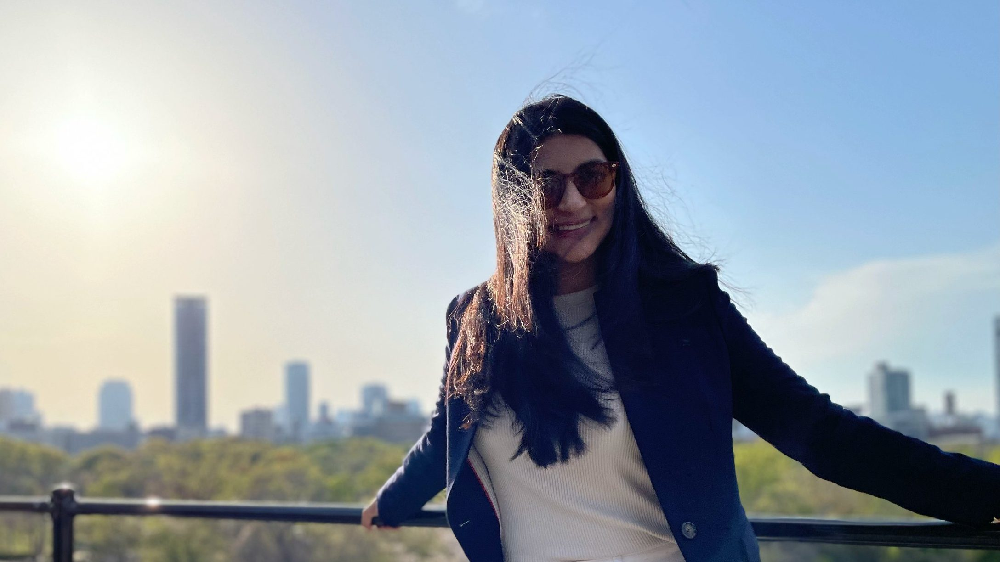

Parita Kapadia
Product Design
Select work
Watch Alongs on Dream11
Dream11 is India’s largest fantasy sports platform, a household name with over 250 million users. As Head of Design, I led the team through a major business pivot to build Watch Alongs, creator-led livestreams where fans follow the match, react, and celebrate together.
I was responsible for the end-to-end user experience, building viewer, creator, and monetization experiences from 0 to 1. My work focused on setting clear product direction, keeping the experience coherent through rapid experimentation, and driving decisive design execution to launch in under two months, ahead of the Cricket World Cup.
AI co-host for Live Sports
As part of Dream11’s Watch Alongs, a small team of data scientists and designers created Googly Bhai, a multilingual voice AI co-host who follows live cricket and banters with creators and fans to keep the crowd entertained.
I owned the experience quality bar, defining evaluation criteria for conversation design, personality, and repeat engagement. Within weeks, creators were inviting an AI co-host into nearly half their streams, with higher watch time, engagement, and spending than their usual streams.




Supervised YouTube
I led the launch of YouTube Supervised Experiences, a safer version of YouTube for 100 million families, built under regulatory scrutiny. I approached it as a systems problem, drawing on user research to establish product and design guidelines adopted across YouTube’s ecosystem, to make hundreds of features age-appropriate.
It found clear product-market fit, with 81% retention, compared with 60% for YouTube Kids, and earned praise from child development experts for balancing tween independence with safety.


YouTube Badges
At YouTube, we reimagined badges as collectible 3D trophies young users would be proud to show off. As Staff UX Manager on Youth, I set the vision and rallied teams around a new direction for YouTube’s visual style.

YouTube Creator Growth
As the sole designer for YouTube’s Public Figure creator program, I used research to find growth opportunities that helped creators build an audience on YouTube, where many expect a slower payoff than on other creator platforms.
Our growth launches turned a 10-channel pilot into a self-sustaining program with 1,098 successful channels in two years, over 100× growth.
PlayVision AI
PlayVision AI’s computer vision model tracks every point of a padel match. As a founding designer, my role was to turn that technology into a consumer product that recreational players would value, and to design the app from 0 to 1.

Hi, I’m Parita, a product designer based in San Francisco, CA.
I design with care, clarity, and purpose to create products that matter to people. I’m currently building in stealth. Previously I led design teams at YouTube.
About, unabridged
I’ve always loved building things. What started with LEGO, puzzles, and ambitious sandcastles evolved into working with wood and metal as an industrial design student.
My curiosity about people and love of making things took me to Silicon Valley, where I spent a decade as a designer. I helped shape Windows 10’s adaptive interface at Microsoft, a pioneering ML-powered advertising product at Google, and a ‘PG’ version of YouTube. Along the way, I learned to simplify complex systems, design for global audiences, and make products feel intuitive and considered.
During a temporary return to Mumbai to be closer to family, I joined Dream11, one of India’s largest consumer tech startups. As Head of Design, I led the team through a major business pivot, building a sports livestreaming product from 0 to 1. I’ve learned to thrive in unfamiliar territory, whether shaping a new product vision, elevating a team’s craft, or getting hands-on to bring ideas to life.
As varied as these challenges have been, my starting point has stayed the same: understanding the people we’re building for and identifying where human needs and business opportunities intersect. I believe good design begins with asking the right questions. I lead with a clear point of view and love bringing people together around what’s possible. I’m always up for tough questions, ambitious ideas, and exploring what technology makes possible.
Outside work, I enjoy tennis, hiking, and looking at the world through my camera.
Experience
Present
Founding Designer
India
2026
Head of Design
India
2025
Senior Director, Product Design
India
2023
Senior Manager, Product Design
California
2020
Senior Interaction Designer
California
2018
Interaction Designer
California
2016
Interaction Designer, Windows
Washington
Education
2022
Executive MBA
California
2013
Master of Design, Interaction Design
Pennsylvania
2010
Bachelor of Design, Industrial Design
India